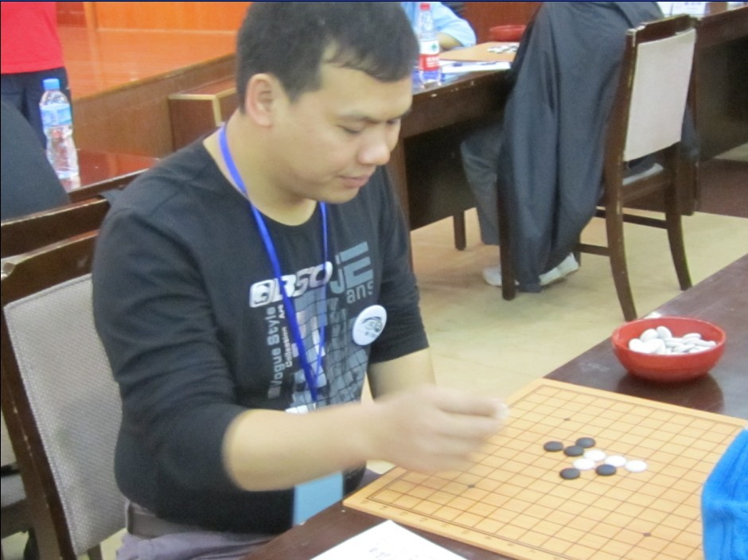

全锦赛小结
#1 全锦赛小结 作者：炫飞花 发表时间：2010-10-23 13:58:58
我总是说每次比赛都是检验自己的时候。在这次的比赛中检验出自己的很多不足的地方，换了一个赛时感觉自己有很多力不从心的地方。下面就说几盘棋吧。
这盘对谢军，我开松月，谢军没换，赛前无聊给过我意见，我采用了，结果白棋防出的几个点都让黑棋没有过多的想法，只能选择交换，交换到 16 都看似必然的了， 17 黑找不到特别好的走法，选择放弃先手让白棋在下面攻，这样的局面如果白棋得到了上面的优势那实在是太恐怖了，必然给下不给上。但是白 18 幷没选择下面，反而跟着黑棋纠缠在一起。白 20 之后感觉黑棋要取胜已经很渺茫了，但是细一看黑棋也有点小东西可以考验一下对手，最终确定了对手考出来了，我也能拿黑把白棋防住，所以就选择了考对手防了，黑行到 31 白 32 跳 3 ，然后白必败了， 32 应该在 35 做 V 唯一防。就这样赢了。
=======上图对应的爱五子棋谱代码如下，以便你拆解：========
h8h9h7h6j7g8f7i7j8g6g5i9j9j6i6k8g10e9f8e7f9f10e8d7k10j11l11i8i10h11k12h12g11j13h10j10j12
======================================================
/*760*90，创建于2012-2-9*/ var cpro_id = 'u761865';
#2 Re:全锦赛小结 作者：炫飞冰弦 发表时间：2010-10-24 0:00:01
奉献白痴比赛照数张～

［ 掌棋宣传员 于 2010-10-24 0:14:10 时花20金币送鲜花一朵］
［ 掌棋宣传员 于 2010-10-24 0:14:11 时花20金币送鲜花一朵］
［ 掌棋宣传员 于 2010-10-24 0:14:12 时花20金币送鲜花一朵］
#3 Re:全锦赛小结 作者：快雪时晴 发表时间：2010-10-25 11:42:44
来过。。。金三银四，占三楼！ 白痴+油~~
白痴+油~~［此帖子已被 快雪时晴 在 2010-10-25 11:45:36 编辑过］
［此帖子已被 快雪时晴 在 2010-10-25 11:46:33 编辑过］